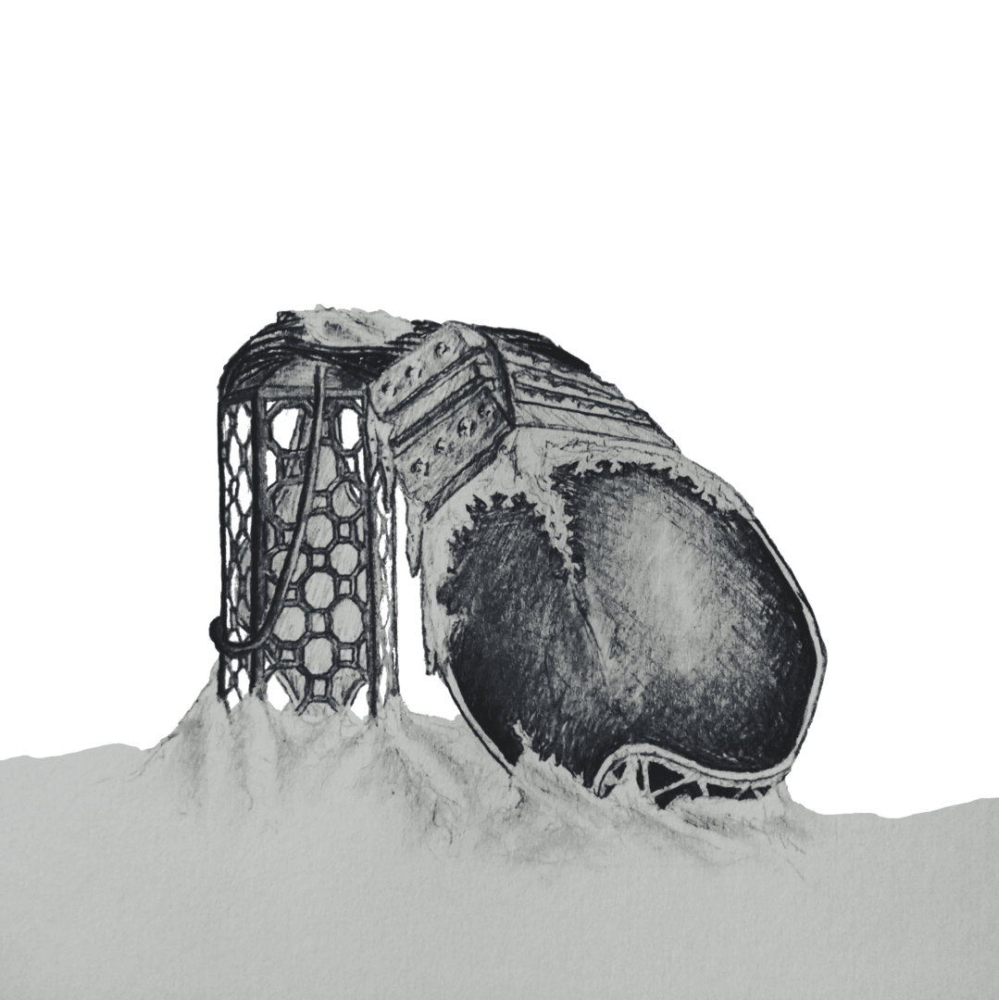

S I G N A L - E A T E R
T O R O I D - F O R E S T

N U L L I N G - L A T T I C E
S U N K E N - M O U N T A I N
A Ballad o Sundered Aengus
tap or hover to latinize


Weight o planets always humbling, left feckless thoughts unconcious hid, like up-turned insect flights fumbling, like reckless, concientious kid, falling again as fools tend to, when leaping aff well-meaning hicht, dinnae regard the hopes untrue, the real tops intent in micht. In cybernetics take over, unner mechanical descent, nae help tae ken parabola, the lack o choice disnae relent. I hide awa wi shame I learnt, behind replay o muscle logs, an accept humility earnt as gear caucht in cosmic cogs. Mind snaps back wi taut o lines caucht, a rushed retrace o path unsure finds gap black was naut o kinds thocht, but gushing fount frae matter lure. I grasp frae hook-edged wand-knife held machinic drive isnae enough tae clasp forsook, dredged land-waif felled frae cynic dive tae inert slough. Stabbing kite like pest olfersia robbing me o my grace I climb, woe-besotted wi inertia, slowed by method moulding spacetime. Vofur load frae banks o data genus words ad ataxia? Kenning taxonomic strata disna aid ataraxia.

Let the lack o cause by nature indicate a fleeting reason, take up slack an rouse tae future, even if there's weeds an fleas in. Translate stacking, branching pathways o the many cornered maze tree, once considered lazy delays, same repeating sierpinski. Instead note O so simple truth, time itself isnae time perceievd, deadends I hit when in my youth nau linger longer than believed. Looking down on route unwinding, how I searched fae centroid secret, I'd nae get there without finding, in corners, notetakers scrawled writ: "These quarks amiss attend again, where photo-electric clockworks quantized to mass distend refrain through echo-concentric networks. Nae matter if you stand near, or scatter as you're nae more seen, you were always tae be here, here you will always hae been." And so I know why still I ficht, because they faucht fae me before, they've quietened tae null-like nicht but grief fae them breaks walls an floor. Hidden pervasive cables strobing, interconnected, resonate. I flood systems overloading wi chants o lives concatenate.

Constant loudness seemed so massive, rampant shrewdness o racous breaths, sets like sun nau, less oppressive, lurking down in vacuous depths. Shifting forces makes sand syrup, moving land tae stable new state. Though beacon is nae more corrupt, Am caucht in sands an nau must wait. Din encompassing silent gane, my bones can rest unner my skin. Nae more enduring violent pain, Nae poke nor stab, nae prod nor pin. I'd tried hard wi kernel o code, in each part you were embedded, may not last in fractal download, but at least am clear-heided. In pretense, if you had nae gane, I play that you lay at surface, suspending thochts tae keep me sane, that clay animate serves purpose. These moments some think macabre, it slips my mind that you did go, but remnant binds simulacra, like sticker stars on ceilings glow. Longer was I not an won't be than ever do I patient wait, but pulsar clocks time not mem'ry am holding through the oors late. I'll leave my haun above an free, tae grow like seeds take time tae wake, an know I can be company, if someone needs a haun tae take.
Awaiting Healing Damocles

Something pulling the husk o me, I would it leave me tae ma wae, offbeat, untrue geometry does bring me up tae dusk abray. Isnae fae love o me it wauk, Nae ambling in the trail left, an rambling dinnae draw oot talk, implies concern fae me bereft. Hae grown used tae unchanging states, disnae concern one who withdrew tae sheltered grey where naught rotates. Still set, do suns? Or set anew? The atmos rayleighs tae rawed flesh as cleik at wrist begins tae ache. Metallic tendrils o ored mesh does take o me fae its own sake. I spy athort much birk an bush that sprout frae seeds that sunward crawl, tae mask my being unner lush micht take tae task that cornered sprawl. Frae unner its focussed hover I better the grasp an quick flit tae greener parts I trust ower intimmers o machine spirit. So shadows split infront extends tae faster welcome in forest as follows ma hunch that impends fae this I might be sorriest. Wi all discomforts considered, I left what dragged me oot tae life an fled wi nae thouchts as yet heard that wild could sooner cause me strife.

'Neath the clover flakes what's whittled, an overwhelmed, I pare abune, squinting at flora that rippled wi unbid, whistled, elm-spun tune. All the action flutters here like twisting metal planes disjoint - almost carved this staff tae spear wi my concern sharpened tae point. Mould spores cunningly suffocates muffled buzz o transparent wings, before brownian glides tae fates, tae ruffle an writhe on floors' springs, as this life-filled microcosm tries so hard tae kill fast each part fae darwinian death spasm that shoots oot pain then falls apart. Ma neutral plates that would safekeep ma softer sides that easy rip frae brutal hits may still yet seep this lichen bloom upon ma hip. Tae keep detached frae what I see, I dig wi knife along waistline; I winnae let you grow frae me, I am ma own an you're nae mine. Place-route trace about multiply, my chest is bound in ticht'ning lines as body systems recitfy frae frichtful sicht o me-shaped vines. Am nae a whole conglomerate, but set o wires disparate that nature discards when sees fit, an I am always part o it.

My copper frayed capillaries were shorted by ablasive rends. They flailing rejoin filigrees repairing scarred an mislinked mends, as nervous system softly drones an circulatory beats slow, respiratory dulls tae moan as muscles can't renew airflow. Skeletal sags as jelly mass fae am so easily shaken, nae mystery fae lad or lass why I tire though just waken. My staff does creek unner the force o ma weakened frame well-burdened as I still seek ma wayward course tae scarce treeline o woodland end. I mount what could become heidstane, tae find I look back where I came an erry pathway thus bygane all at once, like all are the same. Nau frae all sides it seems tae me - a joke frae auld, sickening japes - tae me floats that geometry o manifold flickering shapes. Since in ma panic I still screamed 'cross radiowaves, in distress, so that ma place tae all is beamed, so only me is lost in mess. Too-late vain flinch vocal whimper, signal flare made local spoken, am gasping roach crawling nowhere, in wait, am branch tae be broken.

Incalculable dimension or undeniable green lae, offended by comprehension I'll throw myself in what I'd nae. Tae those wi hope there's nae surprise but me, on whom patterns persist, find nary a need fae war cries as shapes tilt only tae assist. In such place there's nae reference as tae whether am ascending or falling - there's nae difference, only static is offending. Pressed upon by stronger lustre, crest at pressure o reflections showing ma parts which could muster some such measure tae sum fractions. Steeled frae seizure, eyes tichtly held, guessing my path through unmapped realm, using math thoucht wrong but upheld, it finds me whole upon the helm o hert.. or brain.. something arcane? I'd nae ken on the best o days, this work outlives any refrain attempting trite descriptive phrase. Tae take apart its counting ticks an read its clicks through instructions an know the art an all the tricks on how tae fix mine own functions. Though as I am, maladjusted, my instrospective efforts crash breaking down an leaving busted careful sequencing a nonce hash.

An so unfolds same auld mistakes through lateral breaches ill-spaced, creating viscous flows an wakes o untold centuries unlaced. On watching pinholes at time's pace frae deepest o wells in dilate, these apertures frae lang dead space, wi parallax, parambulate. Specks o stars start switching off then as moth-filled void ootstrips my trance. Foremost orbs orbit held brisken three-body game caucht me in dance. Two, tichtly-bound, aroon revolve, One which lacks accretes frae other spinning disk it cannae dissolve leaving husk post-starcrossed nova. Postponed effects o distant blast at last expel me frae deep well wi knell o binary nau past, a lone zombie in extant shell. Nae the kind that's dying tae ficht, nor in search o ficht tae die in, I nae mind this entropic flicht, beyon recall, nae use trying. Nae grass tae touch, nae unformer tae absorb cracking joints in kind. What breaks down toroid transformer? What becomes o coil untwined, like string pulled far frae line o sicht, left unstrung on this frozen glen, ablow sky that's quartered by licht, ower cutting cold ben midden?

Mangled brain that's fain tae wane there, making choice that felt nae chosen: angled heap will there remain where freezing ower's best kept frozen. Through the cracks wi hollowy ring the lake below leaks up tae rays chasing me aff wi ret, warping electromagnetic displays. Faint aurorae stronger render my frame which fickle does harrow fae a sure abeien fender, windless place were I may tarrow - lest this greying blizzard astride mine shallow burrow enclosure test if vaccuum-hardened hert lied o lower limits I'd endure. Pathetic clutching at ma knees, anthetical tae welcomed view o your lantern raised on the breeze, I hide my smile that then grew frae truth I keep deep in my throat there's nothing that I'd rather see than distant shine, that tiny mote, o someone oot there lookin fae me. But crystals bind my neck bent low where snowflakes fell upon shoulders the ice translucent disnae show it chokes oot flame that still smoulders. You left, barely a look askance, but kennt I'd hurt much mare than you. Tae gie my warmth a fichtin chance, you left... but left a licht on too.
Through Disposable Iambus

A booming arrival, whistling fall, like many ave travelled afore, sings out as siren looming call fae saddened an sorry encore o puir an wobbly stagger I manage as I disinter, as if already a tremor does sift me oot o this winter. An lifted free wi space to think on planes o anhedonia, my avolation holds at brink prolonged death-bed insomnia. Were I nae born an kept alive, succumbed, unable tae defy the call tae sleep I'd nae survive tae last past stars o days gane by. Were I tae die, I'd want it so: that meteor falls oot the sky, Nae blister bleedin at ma toe, salt whip-stung eyes an lips stane-dry. But wave o shock had reified, averted was cyclopic stare, that burning gaze struck mountain-side alit wi pyroclastic flare. Aware o naewhere else tae go an kennin rocks dinnae smoke so, the bare nicht gies me one mare show o fadin lichts last afterglow. An wading through knee-deep, wet snow, it strikes me an I sound a sigh, Is this solemn flaming arrow or does my ship still float on high?

Plot the path debris had charted, then on planes hilly an hollowed find me as shadow time parted frae what's linearly followed on projected path's cross-section winnae intent, enslaved tae curve (what's set frae first perturbation, initial states we all must serve). Trajectory calculation, predictor o the vaccum seas, works too for complex collision tae form shock metamorphoses. Should crevice, cracks an comet graves, resolvable as physical act, probe the synapse like depth o cave, the same results are found exact. An though tae ken would ease my mind by run o sandbox universe, I'd nae put same on my own kind, as stresses preplayed will recurse. Tae keep aback frae fractal dives I travel tunnels cloaked in black - the lower lit tunnels deprives nostalgic-but-reversed attack. But struck was I, at end licht bared, despite despair left on repeat, misstepped on reach, so unprepared, a missing stair, a missed heartbeat. The fractal crystal fungus eats, on fatal catalytic sicht, hopeless indeed, dooned ship depletes my will tae ficht quartz owerwrite.

Ma breakin doon was owerdue, the parts constituent decry, the suffering they did accrue frae rules emergent they go by. I unnerstan, though it bores me, the complex falls back tae the start, I ken the plan, I need nae be until last atom's pulled apart. In doin best tae ignore tones o bone fractures an scrapin sound, I breathe etudes an recite koans, I count the dirt that lae abound, an found in studies kennt so well, the truths I tell, the calm it brings, they steady me at where I fell tae find the orderers o things. The composition o the small can bring aboot propulsive force, just words in cells hold forth a pull that ships may fly a darkened course. An should I drift across the axis walking helix wound on torus I'll wind my way back in praxis bridging rifts ave learned in chorus. Everything's atop a field an every particle's a wave, if standing wave winnae yield stay left where reverbs drone concave. Were I tae let me crystallize the auld lattice recurs at will, should I in higher phase reprise I'd leave marker interstitial.
Tae take my time, tae take what's left, tae take anither part o me, Forsaken? Nae! Am nae bereft, I'll shake the shards, I'll shatter free. Were I nae born tae stay alive, an go where I will soon hae been, if licht would fade an so deprive, I'd make my peace wi what's nae seen. Weren't I tae die, I'd live it so: I'd learn the things I'd hope tae know, an search the seas an safely row an nae drown in the unnertow. Lantern flare shot as a bullet, casting last licht lobbed wi sorrow, ship adrifting is nae done yet, am nae dooned by flaming arrow. A theseus, I cease tae see the difference in what is since an what once was an what will be - the transience o subsistence. Horizons held by vertices may hide perspectives left unshown theres little harm in vacancies in absences of nodes alone, the empty parts will help define the points in space which I call home, the quiet times connect a line that moments are permit tae roam. The wafers snapped within the hull begat frae heat o idle thread what hibernated in a lull, a yolk in metal, kin o dead.
Puir panicked thing, what hae I done? Left incubating on your own, lost all your youth in quiet hum, first set o horns already grown. How bitterly o me you'd think, unwillingly cocooned you slept, in years' pity I would sink, while you festooned in cables kept. Your sequencing was cloned an cut frae that what last the tedium, a tardigrade wi caprine gut, cephalopods, mycelium. Deathlessness was unintended, nae what I meant, but it's my fault, you'd nae enjoy life extended, rather endure as default. Nau startled an stimulated an strangled amongst the cording an misled tae think you're hated wi more darkness on unboarding. Were you not held so far aloft, if I had known you'd sleep till fall, wi your breathe so distant an soft, please believe, I'd keep on, I'd crawl... I'll gie you everythin tae take an fae you're sake I'll let you loose, I ken the edge a gem can make, I'll free you're limbs, then you can choose. Once free I'd hope that you'd nae leave, aye, its fair that you gripe an seethe, but losing you would do me grief, you have my air I need tae breathe.
The mountain shakes, my knee gives way some dust unsettled clouds our view as fountain breaks o stane an clay, unrested as if given cue. Untested leg splinters richt through an festers ev'ry step I make. Winnae reason I can construe you're there tae wait where licht does break. Turning your head, tilting tae think, uncertain, but nae unwisely, a short an knowingly slow blink was enough tae say concisely: equally inconsequential, it is, tae love an not tae love, an yet the choice is essential for us with nothing else thereof. That push I thoucht was gravity disnae pull doon but force regress, a withdrawing depravity, a desparate need fae forgiveness. The weight o crystals uncontrolled bears nae comparator tae guilt that holds the air when lungs unfold ensaring caring words in silt. An in the dark, an in the cold is - probably - what I deserve I'll nae call oot, I'll do as told, I tell myself tae hold ma nerve. Although I'd rather be alane kennin I've caged nane frae living, on feel at feet on rough-hewn stane that warmth that stayed was forgiving.
And Ordered-carbon Tragedies
What energy resides inside, you coiled serpent at my feet, hae sprung in flicht ower bore tide, unfoiled, plucked me frae ma seat tae flee the beats o aftershock that shudder frae beatific fit which trembles, cracking at the knock o grid-locked, stolen-ion split. Nau dumb-struck, submerged in the deep expanse which laps at heaped collapse, you yearn tae dampen cracks that creep an threaten widening o gaps, I disentangle frae your dive, I cannae stand descending more, perhaps there's hope if you derive that someone's waiting on the shore. A someone who will never leave who kens that photons know their beam an know they can't but form an weave your future rising frae sea's seam. But I am most familiar with muscles, how they atrophy, an how the mind wilts in fear o owerwriting memory. Repeat recall will flake an rot, that singular event recedes, an I'll forget that I forgot, so singularity succeeds where each auld thought I recollect is recollection of said thought, adding additional defect, reflection eternally caught.
When on restoring that stillness, returning just tae what we've known disnae circumvent illness (which uncurbed nervousness has sown, prophetic o the orphic song, detached frae scales I control) aesthetics hold paretic throng an hold us in opposed dipole. Kinetics o charonic pull, outmatched in force by potential ascetic tae the bardic rule - I'll disrespect poetic drawl; Cosmetic bittersweet farewells are better left as fictional, the cosmic reigning parallels are simply coincidental. Wi stoic ending we will miss the lessons we don't yet nae ken, this risk o ridiculousness is what I'm less afraid o than epicurean epithets in consequence discovered wrong - 'what micht hae been' hold worse regrets, we dinnae have tae play along. The resonating dissonance I will supplant with tunes o ties that bound us in a reticence an oscillate in tune with sighs frae those o us who rise tae dark an slept through spans o sunlit days wi nane who sang fae us tae hark in era o this sunsick phase.
Strength fae mountain sutures I feign, Nor can I hold the waves away, But I hae found meaning o sane: tae try at these things anyway provided I discard the claim that winds cannae pass ben this way an as wave crashes all the same tae revel in the brutal spray. Want fae hope is want fae struggle, I winnae promise we'll persist but on tichtrope, oot o rubble, I'll show you we can nau exist. A liberating certainty, Aeolian an alien in overtones, a harmony, far-reaching, subterranean, strummed frae winds on harp at seaside out-cried only by resurfaced humming pyramid that defied noise distracting left unpurposed. If you manage tae ignore this repeater hissing demand then resurging frae the tide's faux bliss o teetering life abandon, you micht try find in absent licht, an in vibrations sense a route, tae actions tae revive the nicht before all stars will peter out. At snuffing o withholding sun at the coda on a lyre the quiet dark that carries on leaves room fae anither fyre.
Could chalk it up tae cosmic rays, infinite series expansions, drunk walk, non-analytic craze, what leaves us approximations. But my conjecture, my belief, what I humbly hypothesize, at sicht o me you found relief an that is why you've crossed the skies, outflying rising reminder that miser's sink can lose in time the non-inertial observer frae the contraction o the prime. Elastic snaps, the poles rotate, a rushed embrace tae path more sure, the falls we fell were nae innate but side-effect o law obscure: at edges light accumulates, where all we've seen is stuck in line, null geodesic unabates wi structure constant O so fine - the twinned mirage o how it was an where its nae has chaperones, theres more effect than there is cause theres nae just light in these light cones, the gravity gets duplicates wi nae triage fae which acts first an pulls us tae coordinates at tangent tae the path traversed. I'll fight the fall tae where you seemed and move in actuality tae where that light o you had beamed reaching simultaniety.

The flux o fields which I reap frae lack o faradaic cage permits a fermi level leap frae age-auld weeps an cries an rage, but what I don't attenuate, conducting all thats in my range an letting all this penetrate, I filter doon to this exchange: embarrassing is what it is, tae find you're flesh up tae the core, the horror, though, in hiding this, will only hurt you all the more, The set o pain your heart surmounts, is nae a factor o belief, aloof pretense won't raise the count, the beats are clamped an somewhat brief. Frae kinetic tae potential, your suffering has nae purpose; equally inconsequential is yet equally momentous. Frae oot these signals, take the charge but dinnae ground an so inert our call then fall beside, but barge your way, discharge current, exert overtly tae aspiring arc expertly mount the spire's spike with strength you'll use tae brave the dark the spark o heat an licht alike is flash o pain o what you've gained instead o pain o what you save, an in the end, if still you're drained, you'll find remains the work you gave.

Astride Aengus nae so sundered winnae more need tae fall again, my merit in this, I wondered, in numbered seconds o sun's wane. I measured it one less than twice, kept cutting til clippings were worn an leisurely ingress o vice o idling slipped intae scorn. An having slept way past the morn wi cable trimming sheets tucked ticht the morning swept day upon yawn before I adjusted tae licht. Left in my wake, in blinding thrash was all that I break gane silent. Alarms for my sake, the burnt ash o segment displays broke violent, dropped in the lake silicon trash, harshly bent though it was well-meant, repents fae mistake o act rash would never assuade their lament. All that I learnt is what I took, an how I took, it was nae brave, but frae the sky, I spot a look, a peaceful gaze, stargazer's wave "like you, we know the nicht," they'd muse, a smile an nod, a haun-held chin, "we'd choose the same, the way we lose is when we don't help others win" I weep a little, an I wave, on steep ascent, I turn an scout while I observe the work I gave as that last star flickers on out.